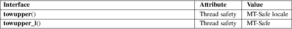

towupper, towupper_l − convert a wide character to uppercase
Standard C library (libc, −lc)
#include <wctype.h>
wint_t
towupper(wint_t wc);
wint_t towupper_l(wint_t wc, locale_t
locale);
Feature Test Macro Requirements for glibc (see feature_test_macros(7)):
towupper_l():
Since glibc 2.10:
_XOPEN_SOURCE >= 700
Before glibc 2.10:
_GNU_SOURCE
The towupper() function is the wide-character equivalent of the toupper(3) function. If wc is a lowercase wide character, and there exists an uppercase equivalent in the current locale, it returns the uppercase equivalent of wc. In all other cases, wc is returned unchanged.
The towupper_l() function performs the same task, but performs the conversion based on the character type information in the locale specified by locale. The behavior of towupper_l() is undefined if locale is the special locale object LC_GLOBAL_LOCALE (see duplocale(3)) or is not a valid locale object handle.
The argument wc must be representable as a wchar_t and be a valid character in the locale or be the value WEOF.
If wc was convertible to uppercase, towupper() returns its uppercase equivalent; otherwise it returns wc.
For an explanation of the terms used in this section, see attributes(7).

towupper()
C11, POSIX.1-2008 (XSI).
towupper_l()
POSIX.1-2008.
towupper()
C99, POSIX.1-2001 (XSI). Obsolete in POSIX.1-2008 (XSI).
towupper_l()
POSIX.1-2008. glibc 2.3.
The behavior of these functions depends on the LC_CTYPE category of the locale.
These functions are not very appropriate for dealing with Unicode characters, because Unicode knows about three cases: upper, lower, and title case.
iswupper(3), towctrans(3), towlower(3), locale(7)